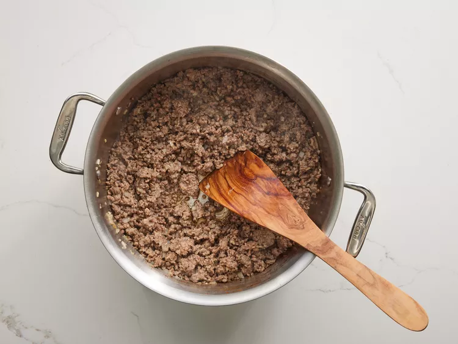

Lasagna

If you want to surprise your friends and/or homage your italian heritage you can't go wrong with this easy-to-make dish!
Lasagna originated in Italy during the Middle Ages. The oldest transcribed text about lasagna appears in 1282 in the Memoriali Bolognesi ("Bolognesi Memorials") , in which lasagna was mentioned in a poem transcribed by a Bolognese notary; while the first recorded recipe was set down in the early 14th-century Liber de Coquina (The Book of Cookery). It bore only a slight resemblance to the later traditional form of lasagna, featuring a fermented dough flattened into thin sheets, boiled, sprinkled with cheese and spices, and then eaten with a small pointed stick.Recipes written in the century following the Liber de Coquina recommended boiling the pasta in chicken broth and dressing it with cheese and chicken fat. In a recipe adapted for the Lenten fast, walnuts were recommended. (source: Wikipedia)
Making lasagna can be time-consuming, but the results are well worth the wait. You'll find a detailed ingredient list and step-by-step instructions in the recipe below, but let's go over the basics:
Ingredients:
- Ground beef (340g / 0,75lbs)
- Italian sausage (450g / 1lbs)
- Onion (1/2 cup, medium size)
- Garlic (2 cloves)
- Crushed tomatoes (800g / 28oz)
- Tomato sauce (180g / 6,5oz)
- Tomato paste (170g / 6oz)
- Water (1/2 cup)
- White sugar (2 tablespoons)
- Salt (1 and 1/2 teaspoons)
- Italian seasoning (1 teaspoon)
- Fennel seeds (1/2 teaspoons)
- Black Pepper (1/2 teaspoons)
- Fresh parsley (4 tablespoons)
- Dried basil leaves (1 and a 1/2 teaspoons)
- Lasagna noodles (12)
- Ricotta cheese (450g / 16oz)
- Mozzarella cheese (340g / 0,75lbs)
- Parmesan cheese (3/4 cup)
- Egg (1)
Instructions
- Make the meat sauce
- Cook the noodles
- Make the ricotta mixture
- Layer the lasagna
- Meat sauce
- noodles
- Ricotta mixture
- Mozzarella slices
- Meat sauce
- Parmesan cheese
- Repeat.Top with parmesan cheese
- Cover with foil and bake
- Let the lasagna rest before serving
Directions
- Gather all the ingredients.

- Cook sausage, ground beef, onion and garlic in a Dutch oven over medium heat until golden brown.

- Stir in crushed tomatoes, tomato sauce, tomato paste, and water. Season with sugar, 2 tablespoons parsley, basil, 1 teaspoon salt, italian seasoning, fennel seeds, and pepper. Simmer, covered, for about 1 and 1/2 hours, stirring, occasionally.

- Bring a large pot of lightly salted water to a boil. Cook lasagna noodles in boiling water for 8 to 10 minutes. Drain noodles and rinse with cold water.

- In a mixing bowl, combine ricotta cheese with egg, remaining 2 tablespoons parsley, and 1/2 teaspoon salt.

- Preheat the oven to 190°C / 375°F.
- To assemble, spread 1 1/2 cups of meat sauce in the bottom of a 33x23cm / 9x13-inch baking dish. Arrange 6 noodles lengthwise over meat sauce, overlapping slightly. Spread with 1/2 of the ricotta cheese mixture. Top with 1/3 of the mozzarella cheese slices. Spoon 1 ½ cups meat sauce over mozzarella, and sprinkle with 1/4 cup Parmesan cheese.

- Repeat layers, and top with remaining mozzarella and Parmesan cheese. Cover with foil: to prevent sticking, either spray foil with cooking spray or make sure the foil does not touch the cheese.

- Bake in the preheated oven for 25 minutes. Remove the foil and bake for an additional 25 minutes.

- Rest lasagna for 15 minutes before serving.